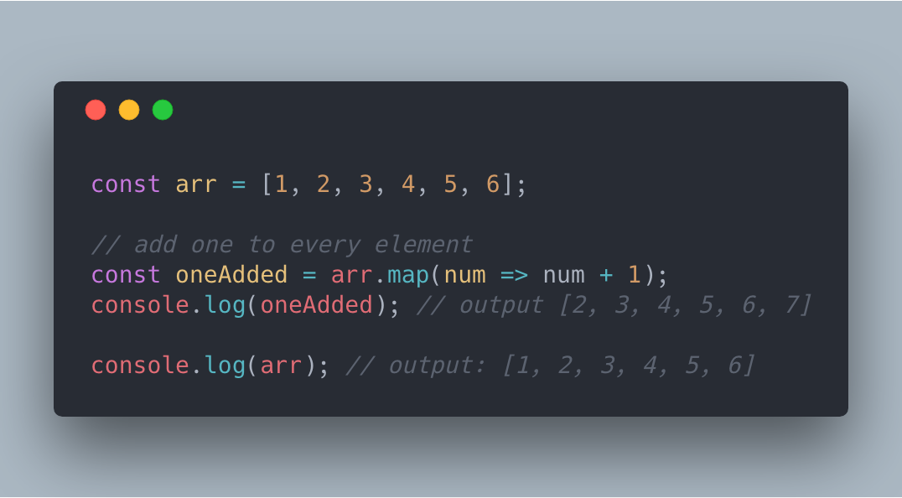

Массивы в

Нетология. Гоник Даниил

This method create new array by calling the provided function in every element.
This method can help you to loop over array's items.
This method used to arrange/sort array's item either ascending or descending order.
This method create new array with only elements passed condition inside the provided function. Let's filter item(s) greater than 3.
The reduce() method applies a function against an accumulator and each element in the array (from left to right) to reduce it to a single value - MDN
This method check if array includes the item passed in the method.
This method check if at least one of array's item passed the condition. If passed, it return 'true' otherwise 'false'.
This method check if all array's item passed the condition. If passed, it return 'true' otherwise 'false'.
This change all thing that are array-like or iterable into true array especially when working with DOM, so that you can use other array methods like reduce, map, filter and so on.
This create array from every arguments passed into it.
| Метод | map | forEach | sort | filter | reduce | includes | some | every | Array.from |
|---|---|---|---|---|---|---|---|---|---|
| Мутирует | нет | нет | да | нет | нет | нет | нет | нет | нет |
| Возвращает | [] | undefined | [] | [] | any | boolean | boolean | boolean | [] |
| Static/instance | instance | instance | instance | instance | instance | instance | instance | instance | static |